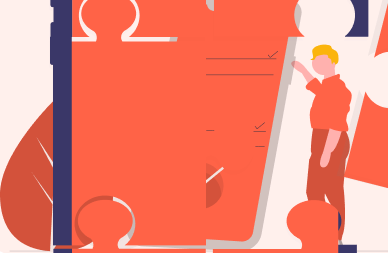

Para acceder al panél y solicitar ayuda debes generar un token de seguridad, aquí puedes hacerlo.

¿Por qué solicitamos un token de seguridad?
El validar un token de seguridad nos permite a los desarolladores de la página validad que la opcion no esta siendo ejecutada por un robot. De esta manera validar sus datos y permitirle a usted ingresar el sistema de manera segura.
¿Por qué solicitamos un token de seguridad en lugar de un captcha?
Utilizamos este sistema ya que el usuario debe enviar una confirmación de su solicitud para poder obtener el código, esto generará su token digital válido solo por un uso y mientras la página este cargada, de lo contrario deberá solicitar otro.
Para conocer más sobre nuestra empresa o apoyar el proyecto ponte en contacto con nosotros.
Conoce más